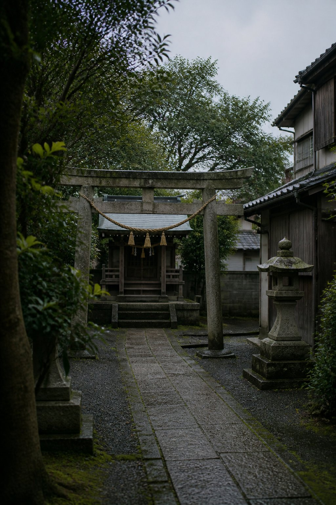

Japan Memory Lane
Quiet moments in Japan.

窓に
雨の跡が
残っていた
The rain had stopped,
but the window still remembered.

電車の音だけが
少し
遠かった
Only the sound of the train
felt a little far away.

誰もいないのに
ちゃんと
静かだった
No one was there,
yet the silence felt complete.

夜道の奥で
小さな灯りが
待っていた
A small light waited
at the end of the night street.

自販機だけが
夜を
覚えていた
Only the vending machine
seemed to remember the night.
夕方の道に
影だけが
残っていた
In the evening street,
only the shadows stayed.
朝の白さが
まだ
ほどけない
The morning whiteness
had not yet loosened.